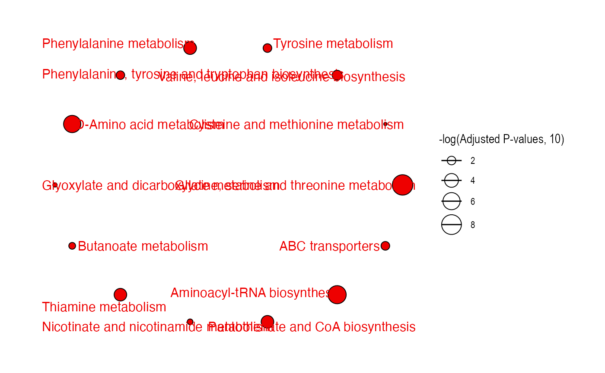

vignettes/kegg_pathway_enrichment.Rmd
kegg_pathway_enrichment.Rmd
library(metpath)
#> Warning in fun(libname, pkgname): mzR has been built against a different Rcpp version (1.0.6)
#> than is installed on your system (1.0.7). This might lead to errors
#> when loading mzR. If you encounter such issues, please send a report,
#> including the output of sessionInfo() to the Bioc support forum at
#> https://support.bioconductor.org/. For details see also
#> https://github.com/sneumann/mzR/wiki/mzR-Rcpp-compiler-linker-issue.
#> ── Attaching packages ───────────────────────────────────────── metpath 0.0.1 ──
#> ✓ metid 1.1.0
#> ── Conflicts ──────────────────────────────────────────── metpath_conflicts() ──
#> x methods::body<-() masks base::body<-()
#> x massdataset::filter() masks metpath::filter(), stats::filter()
#> x massdataset::head() masks utils::head()
#> x methods::kronecker() masks base::kronecker()
#> x massdataset::tail() masks utils::tail()
#>
#> Attaching package: 'metpath'
#> The following object is masked from 'package:stats':
#>
#> filter
data("kegg_hsa_pathway", package = "metpath")
kegg_hsa_pathway
#> ---------Pathway source&version---------
#> KEGG & 2021-12-13
#> -----------Pathway information------------
#> 345 pathways
#> 334 pathways have genes
#> 0 pathways have proteins
#> 281 pathways have compounds
#> Pathway class (top 10): Metabolism; Carbohydrate metabolism;Metabolism; Lipid metabolism
#>
get_pathway_class(kegg_hsa_pathway)
#> # A tibble: 43 × 2
#> class n
#> <chr> <int>
#> 1 Cellular Processes; Cell growth and death 8
#> 2 Cellular Processes; Cell motility 1
#> 3 Cellular Processes; Cellular community - eukaryotes 5
#> 4 Cellular Processes; Transport and catabolism 7
#> 5 Environmental Information Processing; Membrane transport 1
#> 6 Environmental Information Processing; Signal transduction 26
#> 7 Environmental Information Processing; Signaling molecules and interact… 5
#> 8 Genetic Information Processing; Folding, sorting and degradation 7
#> 9 Genetic Information Processing; Replication and repair 7
#> 10 Genetic Information Processing; Transcription 3
#> # … with 33 more rowsWe use the demo compound list from metpath.
data("query_id_kegg", package = "metpath")
query_id_kegg
#> [1] "C00164" "C00099" "C00300" "C01026" "C00122" "C00037" "C05330" "C00097"
#> [9] "C00079" "C00065" "C00188" "C00082" "C00183" "C00166" "C00163" "C00022"
#> [17] "C00213"Remove the disease pathways:
remain_idx =
kegg_hsa_pathway@pathway_class %>%
unlist() %>%
stringr::str_detect("Disease") %>%
`!`() %>%
which()
pathway_database =
filter_pathway(object = kegg_hsa_pathway, remain_idx = remain_idx)
result =
enrich_kegg(query_id = query_id_kegg,
query_type = "compound",
id_type = "KEGG",
pathway_database = pathway_database,
p_cutoff = 0.05,
p_adjust_method = "BH",
threads = 3)Check the result:
result
#> ---------Pathway database&version---------
#> KEGG & 2021-12-13
#> -----------Enrichment result------------
#> 191 pathways are enriched
#> 28 pathways p-values < 0.05
#> Glycolysis / Gluconeogenesis;Citrate cycle (TCA cycle);Pentose phosphate pathway;Pentose and glucuronate interconversions;Fructose and mannose metabolism ... (only top 5 shows)
#>
enrich_bar_plot(object = result)
enrich_scatter_plot(object = result)
enrich_network(object = result)